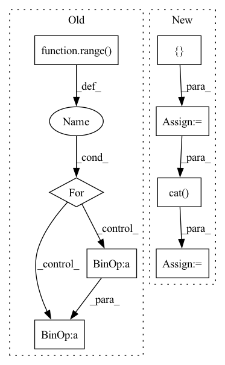

Pattern ID :9336

Before Change
bins = self.fromBits(torch.Tensor(bins).to(self.device)).long()
vec = torch.take(self.centroids[self.nbits], bins)
for i in range(self.num_hadamard):
vec = self.irht(vec, int(seed + (self.num_hadamard - 1) - i))
return (scale * vec)[:int(dim)].cpu().numpy()
After Change
total_dim = int(metadata[1])
curr_index = 0
vec = []
for k in range(2, max(metadata.keys()) + 1, 2):
scale = metadata[k]
dim = int(metadata[k + 1])
vec.append(self.decompress_slice(bins[curr_index:curr_index + dim], scale, dim, seed))
curr_index += dim
vec = torch.cat(vec)
vec = vec[:total_dim]
return vec.cpu().numpy()
In pattern: SUPERPATTERN
Frequency: 3
Non-data size: 8
Instances
Fragment ID: 33476287
Project Name: intel/openfl
Commit Name: c10577cb32201c45846d920f871e4bcab76e37ed
Time: 2023-01-13
Author: 30897761+yanivbi@users.noreply.github.com
File Name: openfl/pipelines/eden_pipeline.py
M Class Name: Eden
N Class Name: Eden
M Method Name: decompress(3)
N Method Name: decompress(5)
M Parent Class:
N Parent Class:
M File Name: openfl/pipelines/eden_pipeline.py
N File Name: openfl/pipelines/eden_pipeline.py
M Start Line: 252
M End Line: 260
N Start Line: 337
N End Line: 354
'>
Before Change
decoder_input_ids.shape[1],
decoder_input_ids.shape[1]),
dtype=torch.float).to(self.device)
for t_index in range(self.max_seq_length-1):
perm_mask[:, -t_index, -(self.max_seq_length-1):-t_index] = 0.0
perm_mask = perm_mask.contiguous()
target_mapping = torch.zeros((input_ids.shape[0], decoder_input_ids.shape[1], decoder_input_ids.shape[1]),
dtype=torch.float).to(self.device)
After Change
def calculate_loss(self, corpus, epoch_idx=-1, nll_test=False):
text_sequence = corpus["target_text"]
input_ids = []
attn_masks = []
for text in text_sequence:
sentence = " ".join([self.sos_token] + text + [self.eos_token])
encoding_dict = self.tokenizer(
sentence,
max_length=self.max_seq_length,
padding="max_length",
truncation=True,
return_tensors="pt",
add_special_tokens=False
)
input_ids.append(encoding_dict.input_ids)
attn_masks.append(encoding_dict["attention_mask"])
input_ids = torch.cat(input_ids, dim=0).to(self.device)
attn_masks = torch.cat(attn_masks, dim=0).to(self.device)
decoder_target_ids = input_ids[:, 1:].contiguous()
'>
Fragment ID: 33476271
Project Name: rucaibox/textbox
Commit Name: 53c76331ad0c943d52e3310affd25d0e505eb830
Time: 2021-01-19
Author: 1020139164@qq.com
File Name: textbox/model/LM/xlnet.py
M Class Name: XLNet
N Class Name: XLNet
M Method Name: calculate_loss(4)
N Method Name: calculate_loss(3)
M Parent Class: UnconditionalGenerator
N Parent Class: UnconditionalGenerator
M File Name: textbox/model/LM/xlnet.py
N File Name: textbox/model/LM/xlnet.py
M Start Line: 90
M End Line: 113
N Start Line: 72
N End Line: 111
'>
Before Change
sigma = self.sigma
seq = [X.clone()]
if self.grad_method == "nes":
for i in range(query_num // 2):
noise = torch.normal(mean=0.0, std=1.0, size=X.shape, device=X.device)
X1 = X + sigma * noise
X2 = X - sigma * noise
seq.append(X1)
seq.append(X2)
if query_num % 2 == 1:
After Change
noise = sigma * torch.normal(mean=0.0, std=1.0, size=shape, device=X.device)
zeros = torch.zeros_like(X)
seq = [zeros]
if self.grad_method == "nes":
seq.extend([noise, -noise])
if query_num % 2 == 1:
seq.append(zeros)
elif self.grad_method == "sgd":
seq.append(noise)
elif self.grad_method == "hess":
noise = self.hess.mm(noise.view(-1, 1)).view(X.shape)
seq.append(noise)
elif self.grad_method == "zoo":
raise NotImplementedError(self.grad_method)
else:
print("Current method: ", self.grad_method)
raise ValueError("Argument "method" should be "nes", "sgd" or "hess"!")
seq = torch.cat(seq).add(X)
return seq
def calc_seq(self, f: Callable, seq: torch.Tensor) -> torch.Tensor:
'>
Fragment ID: 33476283
Project Name: ain-soph/trojanzoo
Commit Name: bc3d366258b45942115b6b86ae8466dac52ac154
Time: 2020-06-30
Author: ain-soph@live.com
File Name: trojanzoo/optim/pgd.py
M Class Name: PGD
N Class Name: PGD
M Method Name: gen_seq(3)
N Method Name: gen_seq(3)
M Parent Class: Optimizer
N Parent Class: Optimizer
M File Name: trojanzoo/optim/pgd.py
N File Name: trojanzoo/optim/pgd.py
M Start Line: 152
M End Line: 174
N Start Line: 154
N End Line: 178